一、系统概述：具身智能的铁路运维新范式
二、系统架构设计：具身智能的技术基础
三、系统工作流程：OpenClaw自主智能的工作方式
四、技术亮点：OpenClaw具身智能的核心优势
五、系统局限性分析与改进方向
六、工业级升级方案：迈向更高性能的具身智能
七、成本与效益分析
一、系统概述：具身智能的铁路运维新范式
二、系统架构设计：具身智能的技术基础
三、系统工作流程：OpenClaw自主智能的工作方式
四、技术亮点：OpenClaw具身智能的核心优势
五、系统局限性分析与改进方向
六、工业级升级方案：迈向更高性能的具身智能
七、成本与效益分析
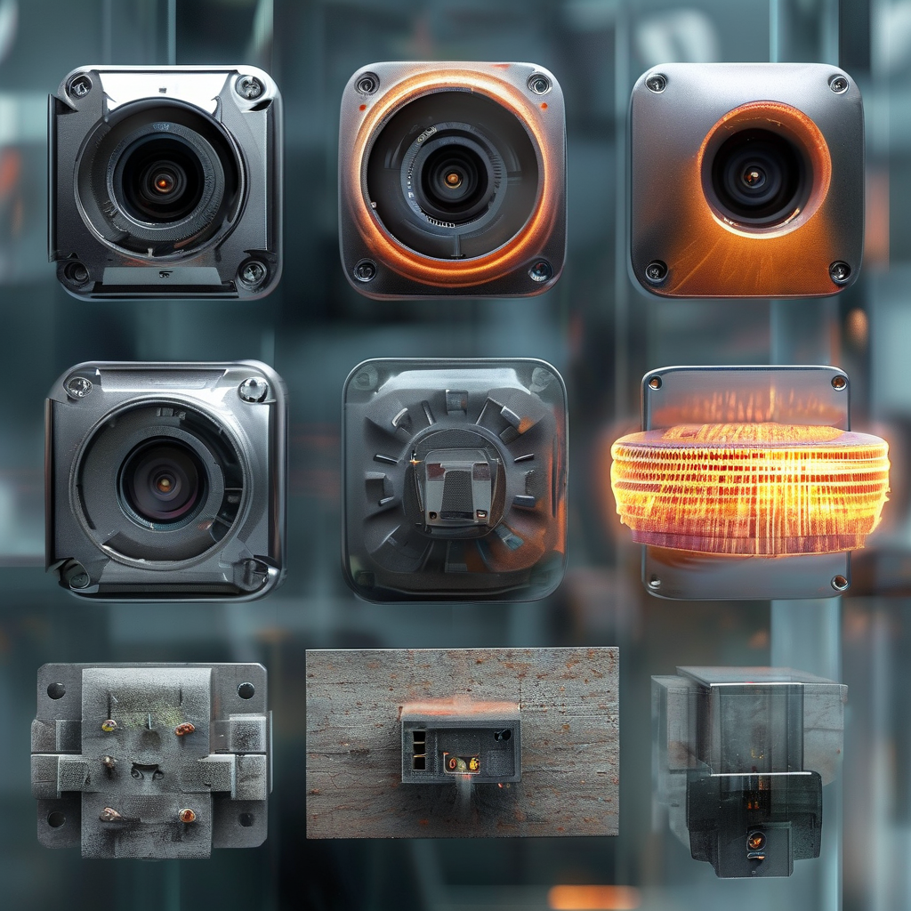
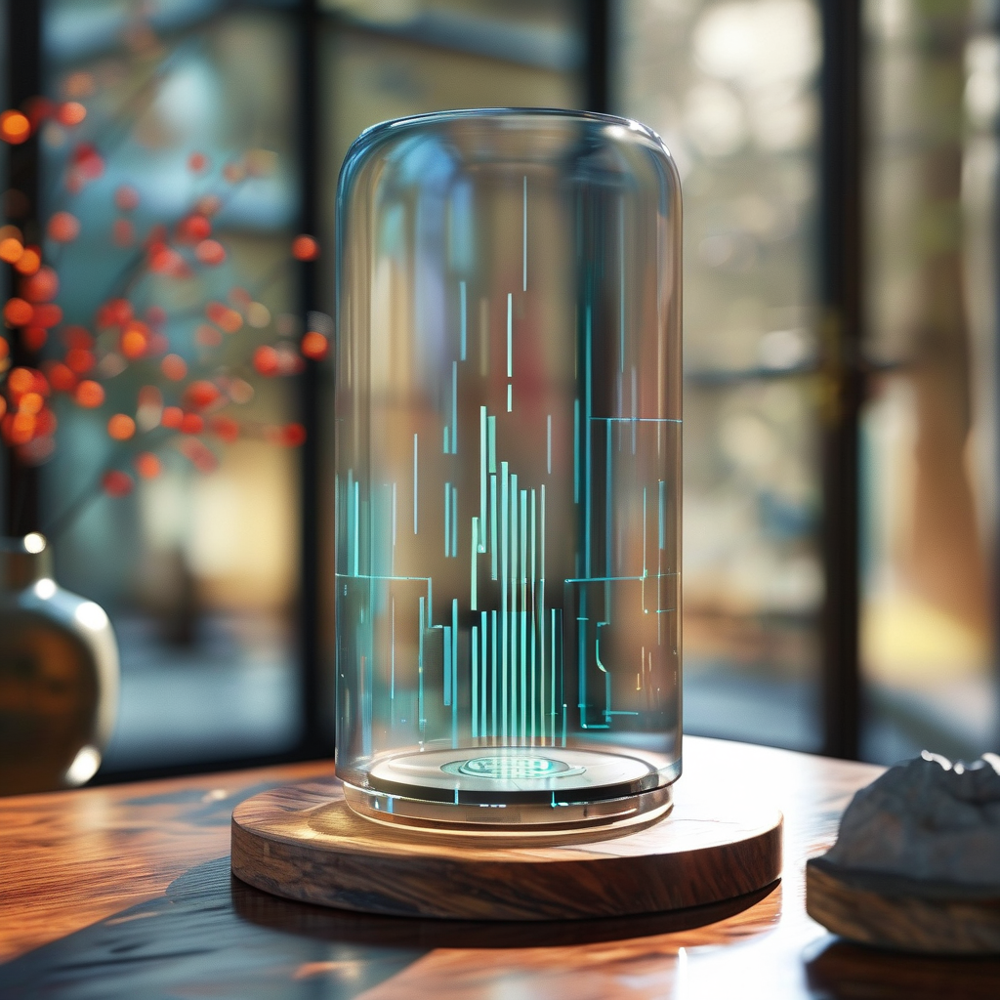
想象一下，如果AI能够跳出电脑屏幕，直接与物理世界互动会怎样？OpenClaw智能铁道机车探伤机器人系统正在将这一变为现实！
这是一款革命性的铁路设备智能检测系统，融合了AI视觉、红外和激光雷达三位一体技术，通过多传感器融合，对铁道机车底部关键部位进行全方位、高精度缺陷检测，确保铁路运输安全。其核心创新在于采用了OpenClaw具身智能控制中枢架构，实现了AI从"数字世界"走向"物理世界"的重大突破。
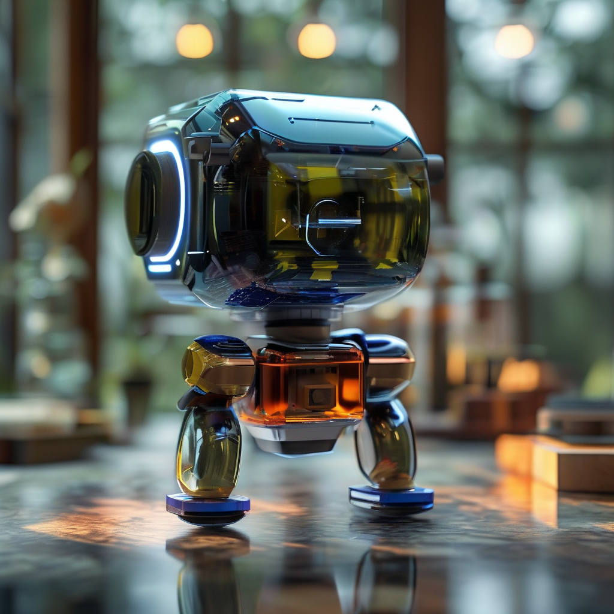
您是否听说过最近爆火的"龙虾"智能编程工具？OpenClaw正是这项革命性技术的杰出应用！我们没有将其局限在虚拟世界，而是创新性地将其植根于机器人主板，为AI装上了"脚"（移动执行系统）和"眼睛"（传感器系统），实现了真正的具身智能。
这就像什么？就像给了AI一副真实的"身体"，让它能够直接感知和改变物理世界！与传统系统"AI模型困在电脑里"截然不同，OpenClaw实现了AI从数字世界走向物理世界的跨越，让AI不再是被动执行命令的工具，而是能够自主决策、自主反应的智能体。
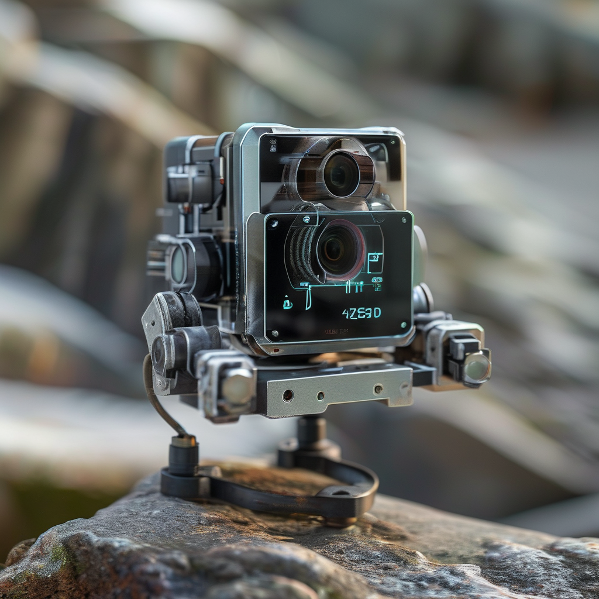
无论是云端还是本地处理，OpenClaw都能实现自主决策和反应，但处理方式有所不同：雏形版大部分数据交由云端处理，而工业版则实现了所有数据的本地处理，这代表了机器人控制技术的重大突破，是AI具身智能应用领域的革命性创新。
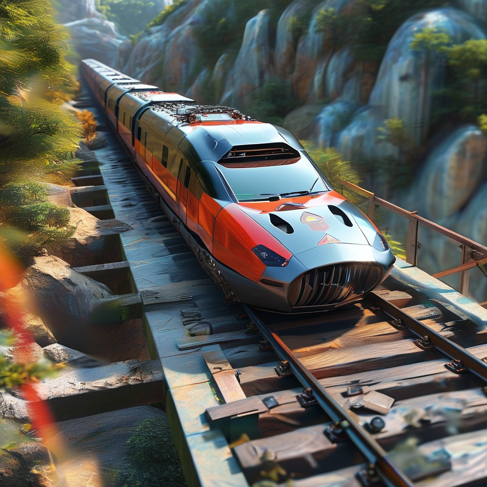
工作环境：机车底部地沟
主要功能：通过多传感器融合实现机车底部故障检测
检测方式：采用视觉、红外和激光雷达三重融合检测技术
操作模式：OpenClaw自主移动检测与远程监控相结合
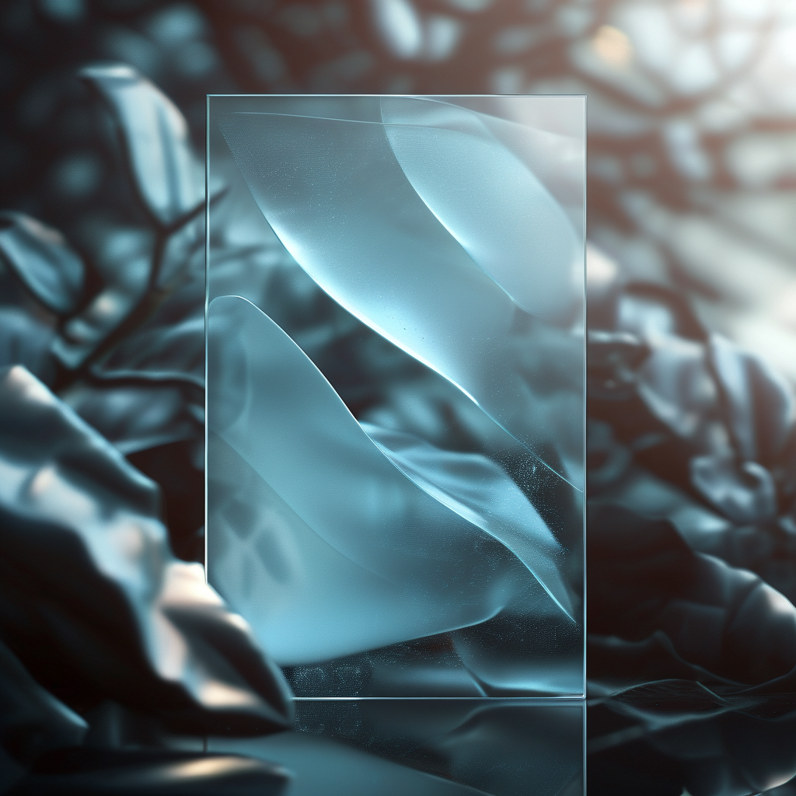
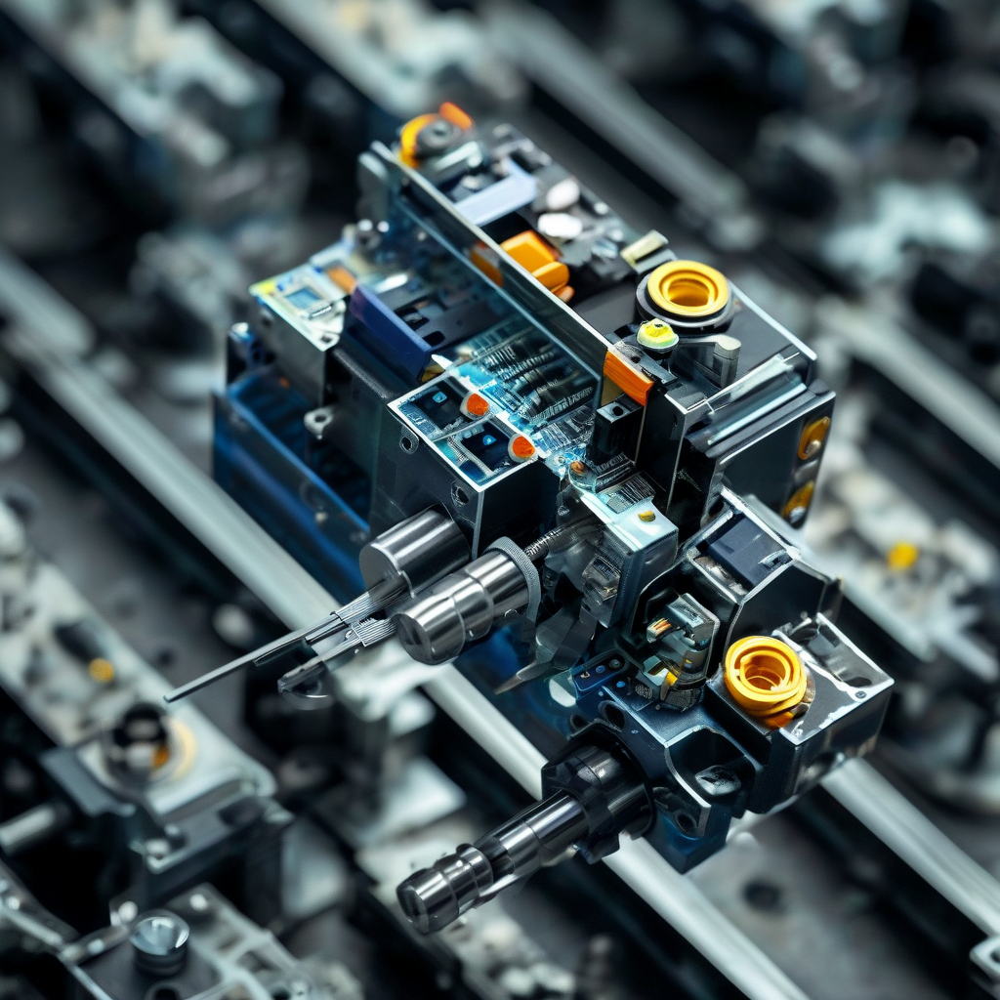
OpenClaw具身智能主板：
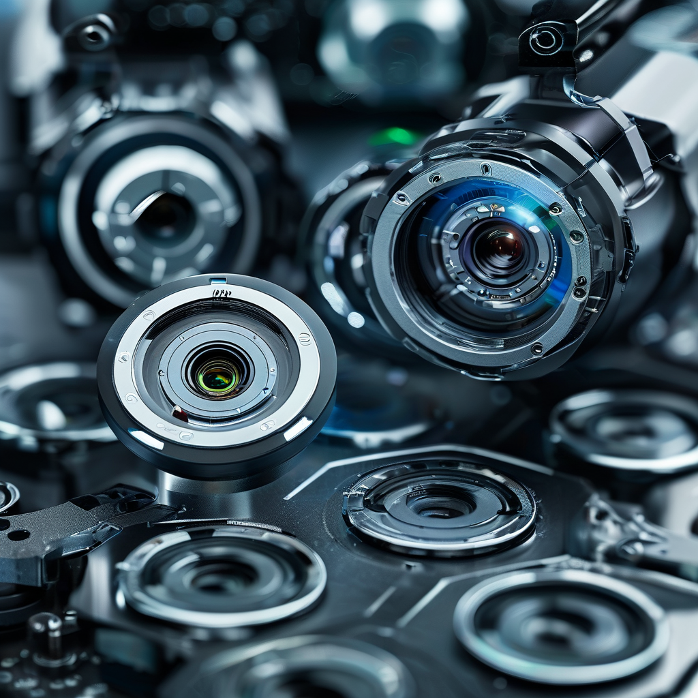
电机驱动模块：控制机器人行走（启停、转向、速度）
舵机驱动系统：控制三个传感器（视觉、红外、激光雷达）的俯仰和旋转
精密机械结构：确保传感器稳定性和检测精度
测距系统（AI的"空间感知器官"）：
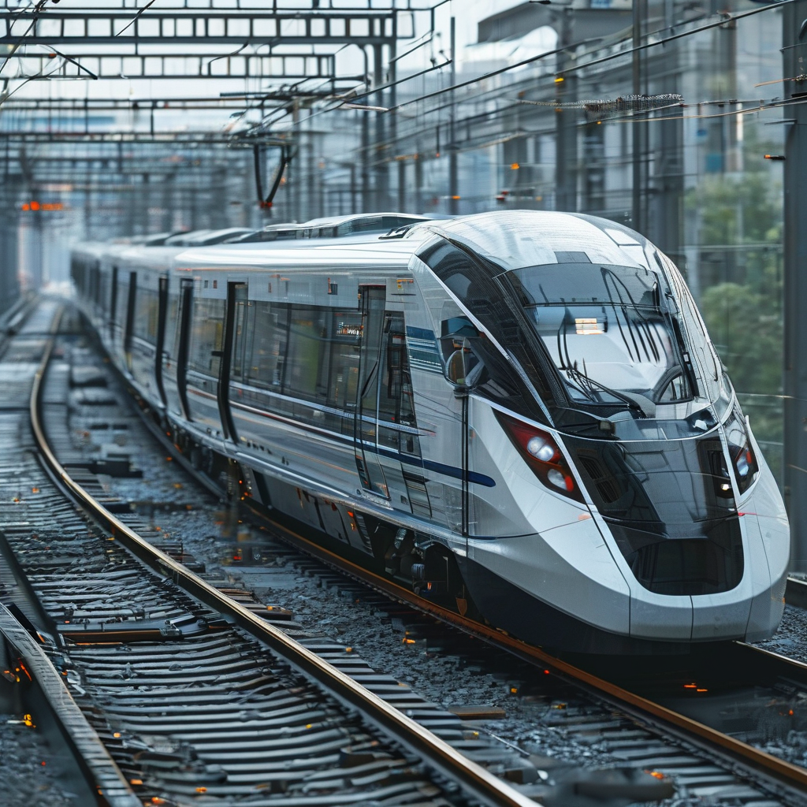
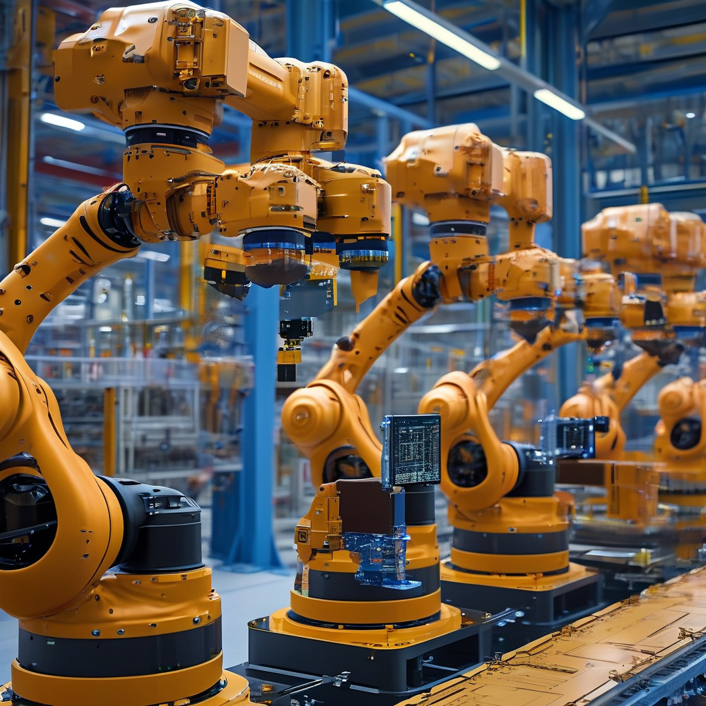
姿态补偿系统：
位置定位系统：
自主决策引擎：
当机器人到达机车底部的第一块检测区域时，OpenClaw智能控制中枢自主决定启动最佳检测序列，而不是简单执行预设程序。
首先，CSI摄像头和红外探测装置同时对该区域进行全方位扫描。CSI摄像头捕捉大量高清图像，OpenClaw的本地AI模型实时分析这些图像，将其与内置的故障特征库进行比对，自主判断是否存在松动脱落的螺栓、断裂的开口销，磨损的车轮踏面和破损的线缆绝缘层等问题。
同时，红外探测装置检测该区域的温度分布，OpenClaw自主分析这些温度数据，识别热轴故障、制动抱死、闸瓦偏磨等温度异常问题。
在CSI摄像头完成扫描后，所有图像数据会立即传输给OpenClaw控制系统。OpenClaw基于内置的大模型数据库，将这些图像与该区域健康状态下的标准图像进行智能对比分析，准确总结出存在的各种明显故障。
几乎同一时间，机器人开始移动，OpenClaw自主控制移动装置，借助IMU姿态补偿和角度编码器的精确控制，沿着检测区域缓缓前行。激光雷达左右摆动进行180°持续扫描，收集成千上万个数据点，形成精确的三维点云图，为机车底部区域提供详细"内部结构"视图。
OpenClaw将三类关键数据进行精确对齐和融合分析：CSI图像分析的故障结果、激光雷达的三维结构图，以及红外探测的温度分布信息。
对于红外探测装置发现的温度异常点，系统会在三维图中精确定位该位置，并结合CSI图像分析结果，交叉验证故障性质。例如，如果红外探测发现某处异常发热，而图像分析显示该位置有电气连接松动，OpenClaw可以自主判断这可能是由于接触电阻增大导致的热故障。
当上述步骤未发现明显故障时，系统会进入"深度体检"阶段。红外探测装置会对该区域进行更细致的温度分布分析，寻找潜在问题，如热轴故障、制动系统异常或电气系统过热等。
OpenClaw将所有传感器数据进行综合分析，基于内置大模型数据库和专家知识库，对发现的异常做出准确诊断，并提供针对性的解决方案。更关键的是，OpenClaw不仅能发现问题，还能自主决定最佳应对措施，根据故障类型和严重程度，调整检测策略、优化移动路径，甚至调整传感器参数。
数据采集阶段：
数据预处理阶段：
智能分析阶段：
数据上传阶段：
云端分析阶段：
结果返回阶段：
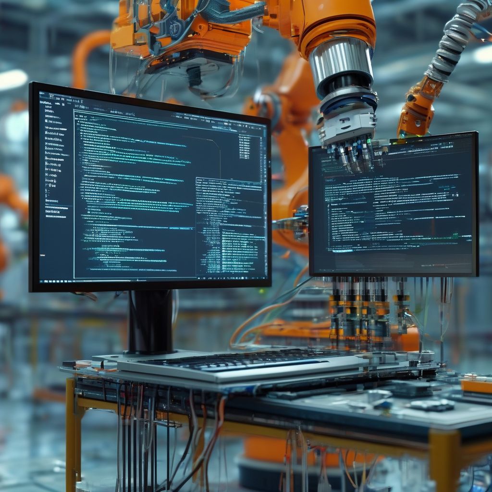
智能解析阶段：OpenClaw解析云端返回的分析结果，结合当前环境和系统状态，确定需要执行的具体操作。
代码生成阶段：根据控制需求生成相应代码，选择合适的控制算法和参数，优化代码以适应当前环境。
代码执行阶段：生成的代码被即时编译并执行，控制指令发送至硬件驱动系统，监控执行状态和结果。
反馈优化阶段：采集执行结果和系统状态，评估控制效果和代码性能，必要时调整和优化代码。
OpenClaw最大的技术亮点在于其自主决策能力。不同于传统的机器人系统只能按照预设程序执行，OpenClaw能够：
OpenClaw采用本地化AI处理架构，将AI模型直接运行在机器人主板上，带来了显著优势：
OpenClaw能够融合多种传感器数据，形成对环境的全方位理解：
OpenClaw具有自主学习能力，能够从经验中学习和改进：
云端依赖性问题：数据交由云端大模型处理而非专门的故障案例数据库，导致故障判断和解决方案不够准确。
改进方向：建立专门的铁路故障案例数据库，开发针对机车底部检测的专用AI模型，结合专家系统提高判断准确性，增强本地处理能力。
工业级标准差距：硬件达不到工业水平要求，耐环境能力、稳定性、寿命等方面存在不足。
改进方向：采用工业级组件和设计，加强机械结构设计和散热系统，提高电磁兼容性和抗干扰能力。
AI算法精度问题：AI检测算法精度有待提升，对复杂背景和光照条件下的识别能力有限。
改进方向：增加训练数据量和多样性，优化算法模型结构，开发针对特定缺陷的专用算法。
与现有系统集成困难：与铁路现有检修系统集成存在障碍，数据格式和通信协议不统一。
改进方向：开发标准化数据接口，支持多种通信协议和数据格式，与现有系统建立数据转换机制。
高分辨率工业相机：华睿科技A5B57MU200，2500万像素，30fps；高帧率和低噪声设计；支持多种触发和同步模式；工作温度范围：-40°C至+70°C；防护等级：IP67
红外热成像相机：海康威视DV-RS32，640×512热分辨率；高精度温度测量能力（±0.5°C）；宽温范围和抗干扰设计；非接触温度检测，远距离测量
高性能激光雷达：镭神智能CX128S2，128线，测距精度±2cm；高密度点云采集；强抗干扰能力和远距探测；工作温度范围：-40°C至+70°C
OpenClaw Pro智能控制中枢：
高功率执行系统：
多视觉系统：增加至3-5个不同角度的摄像头；实现多区域同时检测；提高检测覆盖率和redundancy
多激光雷达：采用2-4个激光雷达形成阵列；实现全方位环境感知；提高测量的精度和可靠性
辅助传感器：增加超声波传感器近距离检测；添加应变片检测结构应力；集成更多环境传感器
分层架构设计：设备抽象层（统一设备接口，隐藏硬件细节）；数据处理层（多传感器数据对齐和同步）；服务管理层（设备状态管理，任务调度）；API接口层（标准化RESTful API接口）
实时数据处理：多线程处理架构；OpenCL并行计算加速；TensorRT引擎优化AI推理；GPU加速计算优化
专业数据库系统：铁路故障专用案例数据库；故障模式识别和预警系统；历史数据分析和趋势预测
改进型YOLOv8s算法：针对铁路缺陷检测优化的网络结构；增强对小缺陷和低对比度缺陷的检测能力；提高复杂背景下的检测精度；轻量化模型设计，适应边缘设备
多传感器融合算法：基于卡尔曼滤波的数据融合；多源数据的不确定性量化；自适应融合权重调整；融合结果的一致性检查
专业故障诊断专家系统：铁路故障诊断知识库；故障树推理机制；基于案例的推理系统；故障解决方案推荐
检测精度：从目前的85-90%提升至99%以上；通过多传感器融合和专业AI模型实现
处理速度：从目前的5-10fps提升至30fps以上；通过边缘计算和硬件加速实现
环境适应性：工作温度范围从-20°C至+50°C扩展至-40°C至+70°C；通过工业级组件和热管理设计实现
防护等级：从IP54提升至IP67；通过密封设计和特殊材料实现
自主决策率：从目前的70%提升至95%以上；通过增强型OpenClaw Pro实现
学习能力：从有限的固定模板提升至持续学习；通过在线学习和经验积累实现
适应性：增强对不同车型和环境的适应能力；通过自适应参数调整和自组织实现
硬件成本：
软件成本：专业AI模型开发成本：约30,000元/套；总软件成本：约30,000元/套
总升级成本：约195,000元/套
直接经济效益：
间接经济效益：
假设每次人工检测成本约200元，机器人检测成本约50元，每次节约150元
每天检测10趟列车，每年约300个工作日，总节约成本约135万元
投资回收期约1.4年，之后开始净收益
OpenClaw智能铁道机车探伤机器人系统代表了AI从"数字世界"走向"物理世界"的重大突破，是具身智能技术在铁路运维领域的创新应用。通过将OpenClaw"龙虾"智能编程工具部署在机器人主板上，我们实现了AI从被动执行程序到自主决策、自主反应的转变。
突破性的技术架构：OpenClaw+机器人的组合实现了本地化AI处理，突破了传统云端处理的局限，提供了超低延迟、高可靠性的智能决策能力。这种"从数字世界走向物理世界"的技术革新，标志着人工智能应用方式的重大转变。
全方位的感知能力：通过视觉、红外、激光雷达等多传感器的融合，OpenClaw能够全方位理解检测环境，准确识别各种故障。
自主决策能力：不同于传统的自动化系统，OpenClaw能够根据实时环境自主调整检测策略，应对各种复杂情况。
持续学习进化：OpenClaw具有自主学习能力，能够从经验中学习，不断优化检测算法和决策策略。
未来，随着OpenClaw技术的不断发展和完善，智能铁道机车探伤机器人系统将在铁路运维中发挥越来越重要的作用，为铁路运输安全提供更加可靠、高效的保障，同时也将推动具身智能技术在更多领域的应用和发展。我们相信，OpenClaw系统将继续引领AI从数字世界走向物理世界的技术潮流，开创智能机器人应用的新纪元。
Web PPT 制作人：机车车辆25-5王政杰
项目负责人：机车车辆25-5王政杰